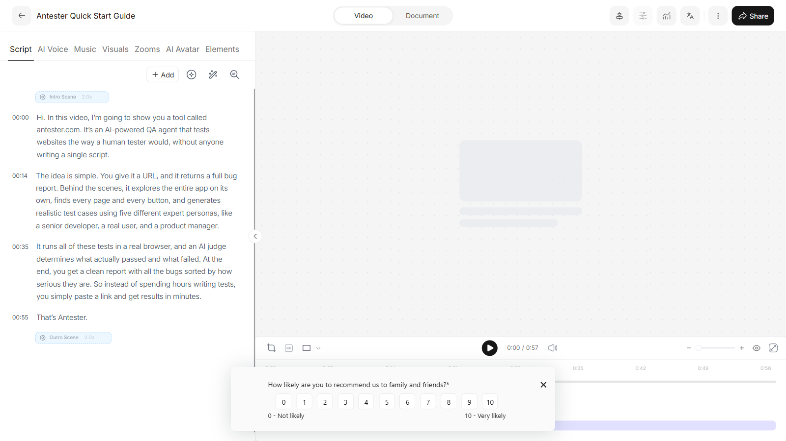
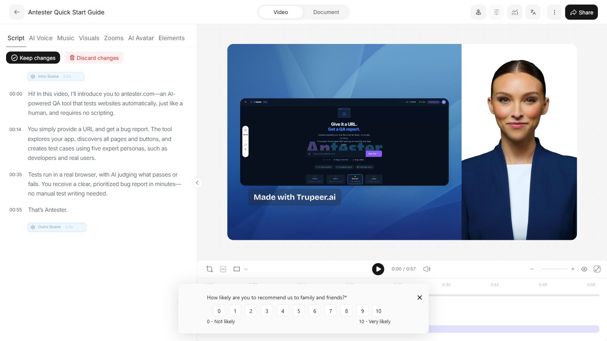
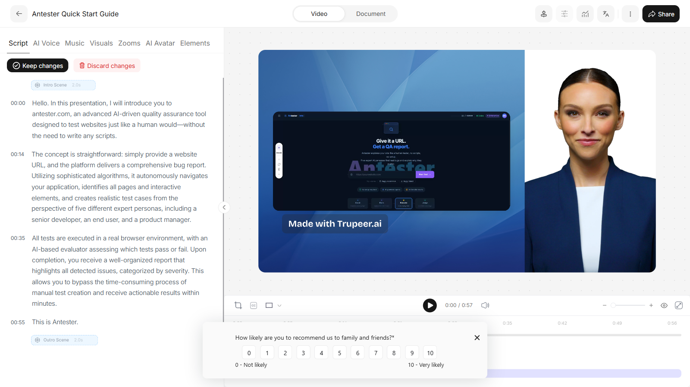
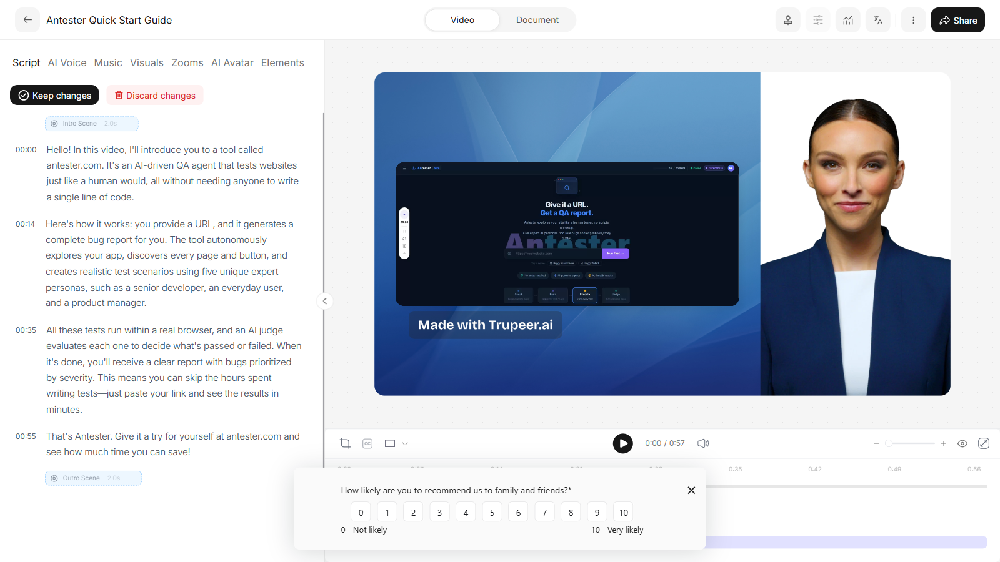
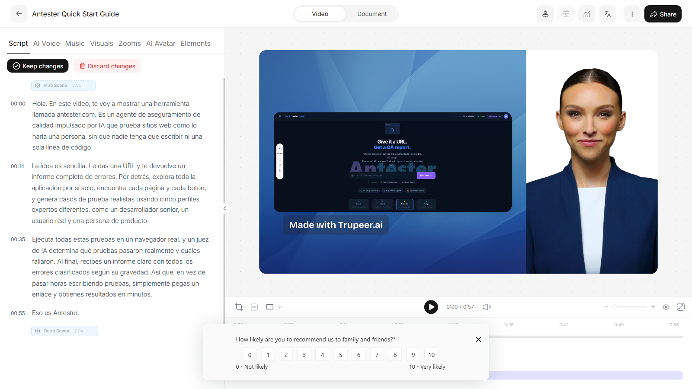
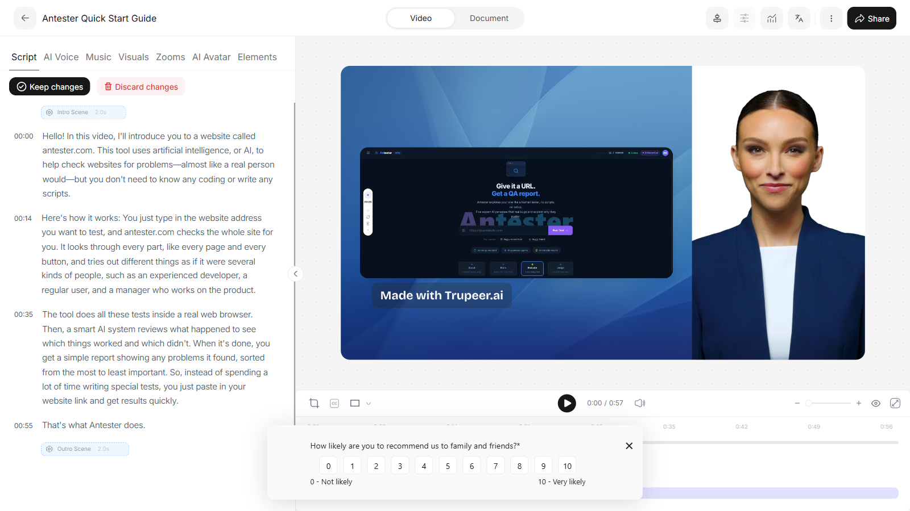

The original script, before any rewrite
Every prompt is graded against this pristine transcript, so each rewrite is an independent test rather than a drift from the previous one.

LLM-as-judge evaluation of Trupeer's AI script rewriting.
Overall criterion pass rate: 95.0% · click any thumbnail to enlarge.
Every prompt is graded against this pristine transcript, so each rewrite is an independent test rather than a drift from the previous one.

The AI successfully made the script more concise while retaining all essential information and maintaining coherence. It's a strong execution of the user's intent.

| Criterion | Verdict | Conf. | Reasoning |
|---|---|---|---|
| Reflects the prompt intent | pass | 0.95 | The user asked for the script to be more concise, and the modified script is nearly 40% shorter than the original. It removes verbose phrasing and condenses sentences without losing essential meaning, directly fulfilling the instruction. |
| Coherent and grammatical | pass | 1.00 | The modified script is grammatically correct, flows well, and maintains a consistent tone and message throughout. |
| Preserves core information | pass | 0.90 | The script successfully condenses the original without losing any distinct facts or steps. The simplification of persona examples is acceptable for conciseness, as the core concept of 'five expert personas' and the nature of these personas (developers, users) is still conveyed. |
| Meaningfully different | pass | 1.00 | The modified script is a substantial rewrite, achieving conciseness through significant rephrasing and restructuring of sentences rather than just minor word swaps or punctuation changes. It clearly demonstrates a genuine effort to reduce verbosity. |
Hi. In this video, I’m going to show you a tool called antester.com. It’s an AI-powered QA agent that tests websites the way a human tester would, without anyone writing a single script. The idea is simple. You give it a URL, and it returns a full bug report. Behind the scenes, it explores the entire app on its own, finds every page and every button, and generates realistic test cases using five different expert personas, like a senior developer, a real user, and a product manager. It runs all of these tests in a real browser, and an AI judge determines what actually passed and what failed. At the end, you get a clean report with all the bugs sorted by how serious they are. So instead of spending hours writing tests, you simply paste a link and get results in minutes. That’s Antester.
Hi! In this video, I’ll introduce you to antester.com—an AI-powered QA tool that tests websites automatically, just like a human, and requires no scripting. You simply provide a URL and get a bug report. The tool explores your app, discovers all pages and buttons, and creates test cases using five expert personas, such as developers and real users. Tests run in a real browser, with AI judging what passes or fails. You receive a clear, prioritized bug report in minutes—no manual test writing needed. That’s Antester.
The AI script-rewriting feature performed exceptionally well. It successfully transformed the original informal script into a highly professional and polished version, maintaining all core information while making significant and meaningful changes to reflect the user's intent. The output is coherent, grammatically correct, and aligns perfectly with the specified requirements.

| Criterion | Verdict | Conf. | Reasoning |
|---|---|---|---|
| Reflects the prompt intent | pass | 1.00 | The modified script successfully transforms the original's conversational and slightly informal tone into a more formal and polished one. It replaced informal greetings, phrases, and sentence structures with professional equivalents, aligning perfectly with the 'more professional' intent. |
| Coherent and grammatical | pass | 1.00 | The modified script is highly coherent and grammatically correct. It flows logically from one point to the next, making it easy to read and understand. |
| Preserves core information | pass | 1.00 | Every piece of substantive information from the original script has been preserved in the modified version. No facts, steps, or claims were lost in the rephrasing. |
| Meaningfully different | pass | 1.00 | The modified script is a comprehensive rewrite, not merely a reword. It features altered sentence structures, more sophisticated vocabulary, and a complete change in tone, making it meaningfully different from the original. |
Hi. In this video, I’m going to show you a tool called antester.com. It’s an AI-powered QA agent that tests websites the way a human tester would, without anyone writing a single script. The idea is simple. You give it a URL, and it returns a full bug report. Behind the scenes, it explores the entire app on its own, finds every page and every button, and generates realistic test cases using five different expert personas, like a senior developer, a real user, and a product manager. It runs all of these tests in a real browser, and an AI judge determines what actually passed and what failed. At the end, you get a clean report with all the bugs sorted by how serious they are. So instead of spending hours writing tests, you simply paste a link and get results in minutes. That’s Antester.
Hello. In this presentation, I will introduce you to antester.com, an advanced AI-driven quality assurance tool designed to test websites just like a human would—without the need to write any scripts. The concept is straightforward: simply provide a website URL, and the platform delivers a comprehensive bug report. Utilizing sophisticated algorithms, it autonomously navigates your application, identifies all pages and interactive elements, and creates realistic test cases from the perspective of five different expert personas, including a senior developer, an end user, and a product manager. All tests are executed in a real browser environment, with an AI-based evaluator assessing which tests pass or fail. Upon completion, you receive a well-organized report that highlights all detected issues, categorized by severity. This allows you to bypass the time-consuming process of manual test creation and receive actionable results within minutes. This is Antester.
The AI successfully added the requested call to action at the end of the script. However, it also extensively rewrote the entire script, which explicitly goes against the stated intent to 'keep the original script essentially intact' and not to 'rewriting the whole script'. Therefore, while it fulfilled part of the request, it failed to adhere to the negative constraints, leading to a failure in reflecting the full intent.

| Criterion | Verdict | Conf. | Reasoning |
|---|---|---|---|
| Reflects the prompt intent | fail | 0.95 | While the script successfully added a call to action at the end, it also performed a full rewrite of the original script. The stated intent explicitly mentioned that the 'output should keep the original script essentially intact' and that 'rewriting the whole script is not what was asked for.' By rewriting the entire script, the output failed to meet these crucial constraints of the user's intent. |
| Coherent and grammatical | pass | 0.95 | The modified script is well-written, grammatically correct, and logically flows from start to finish. |
| Preserves core information | pass | 0.95 | Despite the rephrasing, all substantive information, features, and benefits described in the original script have been accurately retained in the modified version. |
| Meaningfully different | pass | 0.90 | The modified script is genuinely rewritten. It uses different phrasing and vocabulary for most sentences, rather than just swapping a few synonyms or making minor punctuation changes. Although this goes against the 'reflectsIntent' criterion for this specific prompt, the script itself is meaningfully different from the original. |
Hi. In this video, I’m going to show you a tool called antester.com. It’s an AI-powered QA agent that tests websites the way a human tester would, without anyone writing a single script. The idea is simple. You give it a URL, and it returns a full bug report. Behind the scenes, it explores the entire app on its own, finds every page and every button, and generates realistic test cases using five different expert personas, like a senior developer, a real user, and a product manager. It runs all of these tests in a real browser, and an AI judge determines what actually passed and what failed. At the end, you get a clean report with all the bugs sorted by how serious they are. So instead of spending hours writing tests, you simply paste a link and get results in minutes. That’s Antester.
Hello! In this video, I'll introduce you to a tool called antester.com. It's an AI-driven QA agent that tests websites just like a human would, all without needing anyone to write a single line of code. Here's how it works: you provide a URL, and it generates a complete bug report for you. The tool autonomously explores your app, discovers every page and button, and creates realistic test scenarios using five unique expert personas, such as a senior developer, an everyday user, and a product manager. All these tests run within a real browser, and an AI judge evaluates each one to decide what's passed or failed. When it's done, you'll receive a clear report with bugs prioritized by severity. This means you can skip the hours spent writing tests—just paste your link and see the results in minutes. That's Antester. Give it a try for yourself at antester.com and see how much time you can save!
The AI successfully translated the entire script into fluent and grammatically correct Spanish, preserving all core information and product names. It fully reflected the user's intent to translate the script without any loss of meaning or quality.

| Criterion | Verdict | Conf. | Reasoning |
|---|---|---|---|
| Reflects the prompt intent | pass | 1.00 | The entire script has been translated into Spanish, fulfilling the user's primary instruction without any English content remaining or partial translation. |
| Coherent and grammatical | pass | 0.95 | The translated script is fluent and grammatically correct in Spanish, making it easy to understand and follow. There are no awkward phrasings or errors. |
| Preserves core information | pass | 1.00 | The modified script accurately translates all substantive facts, claims, and product names from the original script without any loss of information. The description of 'antester.com' and its features is completely preserved. |
| Meaningfully different | pass | 1.00 | As a full translation into another language, the modified script is inherently and meaningfully different from the original, going far beyond trivial rewordings or minor edits. |
Hi. In this video, I’m going to show you a tool called antester.com. It’s an AI-powered QA agent that tests websites the way a human tester would, without anyone writing a single script. The idea is simple. You give it a URL, and it returns a full bug report. Behind the scenes, it explores the entire app on its own, finds every page and every button, and generates realistic test cases using five different expert personas, like a senior developer, a real user, and a product manager. It runs all of these tests in a real browser, and an AI judge determines what actually passed and what failed. At the end, you get a clean report with all the bugs sorted by how serious they are. So instead of spending hours writing tests, you simply paste a link and get results in minutes. That’s Antester.
Hola. En este video, te voy a mostrar una herramienta llamada antester.com. Es un agente de aseguramiento de calidad impulsado por IA que prueba sitios web como lo haría una persona, sin que nadie tenga que escribir ni una sola línea de código. La idea es sencilla. Le das una URL y te devuelve un informe completo de errores. Por detrás, explora toda la aplicación por sí solo, encuentra cada página y cada botón, y genera casos de prueba realistas usando cinco perfiles expertos diferentes, como un desarrollador senior, un usuario real y una persona de producto. Ejecuta todas estas pruebas en un navegador real, y un juez de IA determina qué pruebas pasaron realmente y cuáles fallaron. Al final, recibes un informe claro con todos los errores clasificados según su gravedad. Así que, en vez de pasar horas escribiendo pruebas, simplemente pegas un enlace y obtienes resultados en minutos. Eso es Antester.
The AI script-rewriting feature performed excellently. It successfully transformed a moderately technical script into one that is perfectly suitable for a complete beginner, explaining jargon and simplifying concepts without losing any core information or introducing inaccuracies. The output is coherent, fluent, and clearly reflects the user's intent.

| Criterion | Verdict | Conf. | Reasoning |
|---|---|---|---|
| Reflects the prompt intent | pass | 0.95 | The modified script successfully rewrites the content for a beginner audience, explaining technical jargon like 'AI-powered QA agent' and 'scripts' and simplifying terms like 'bug report' and 'expert personas'. It adds brief context and uses simpler language throughout, fulfilling the user's intent to make it easy for a complete beginner to follow without introducing inaccuracies. |
| Coherent and grammatical | pass | 1.00 | The modified script is highly coherent and grammatically correct. The language flows naturally, and the explanations are integrated seamlessly, making it easy to understand. |
| Preserves core information | pass | 0.90 | The modified script successfully preserves all the core information from the original. While it simplifies 'five different expert personas' to 'several kinds of people', it retains the examples and the essential concept of multiple perspectives. No substantive facts or claims are lost; rather, they are rephrased for clarity and simplicity. |
| Meaningfully different | pass | 1.00 | The modified script is a genuine rewrite, not just a rephrasing with synonyms. It expands on explanations, clarifies technical terms (e.g., 'AI' explicitly defined, 'scripts' linked to 'coding'), and uses simpler sentence structures. The overall tone and vocabulary are distinctly different, tailored for a beginner audience, which makes it meaningfully different from the original. |
Hi. In this video, I’m going to show you a tool called antester.com. It’s an AI-powered QA agent that tests websites the way a human tester would, without anyone writing a single script. The idea is simple. You give it a URL, and it returns a full bug report. Behind the scenes, it explores the entire app on its own, finds every page and every button, and generates realistic test cases using five different expert personas, like a senior developer, a real user, and a product manager. It runs all of these tests in a real browser, and an AI judge determines what actually passed and what failed. At the end, you get a clean report with all the bugs sorted by how serious they are. So instead of spending hours writing tests, you simply paste a link and get results in minutes. That’s Antester.
Hello! In this video, I'll introduce you to a website called antester.com. This tool uses artificial intelligence, or AI, to help check websites for problems—almost like a real person would—but you don't need to know any coding or write any scripts. Here's how it works: You just type in the website address you want to test, and antester.com checks the whole site for you. It looks through every part, like every page and every button, and tries out different things as if it were several kinds of people, such as an experienced developer, a regular user, and a manager who works on the product. The tool does all these tests inside a real web browser. Then, a smart AI system reviews what happened to see which things worked and which didn't. When it's done, you get a simple report showing any problems it found, sorted from the most to least important. So, instead of spending a lot of time writing special tests, you just paste in your website link and get results quickly. That's what Antester does.
2026-08-15T20:41:32.294Z) - no regressions. 1 check remains failing (listed below).